Puente Alto · Av. Los Toros 1464
¿Conoce a alguien que haga esto?
La pregunta de todos los días, con 390 reseñas.
- 390reseñas en Google
- 7días a la semana abierta
- 6líneas: de la obra gruesa a las llaves
- 0páginas propias: la vitrina digital no existe
El maestro recomendado
Usted compra acá. ¿Y quién lo instala?
- GASFÍTER
Llaves y cañerías
Pida un contacto - ELÉCTRICO
Enchufes y tableros
Pida un contacto - PINTOR
Muros y rejas
Pida un contacto - MAESTRO
Obra gruesa
Pida un contacto - CARPINTERO
Puertas y muebles
Pida un contacto - SOLDADOR
Rejas y portones
Pida un contacto
La ferretería decide si recomienda y a quién.
El material se compra en el mesón. El maestro, también.
En Los Toros 1464
Qué hay
-
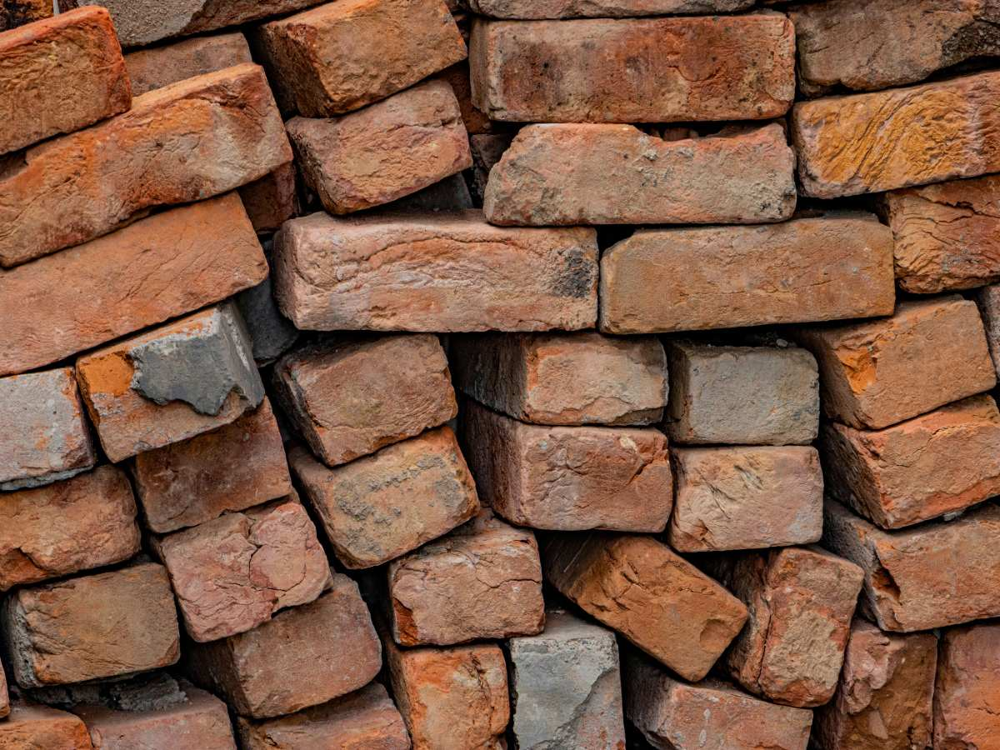
Al por mayor
Ladrillos
Distribuidores mayoristas.
-
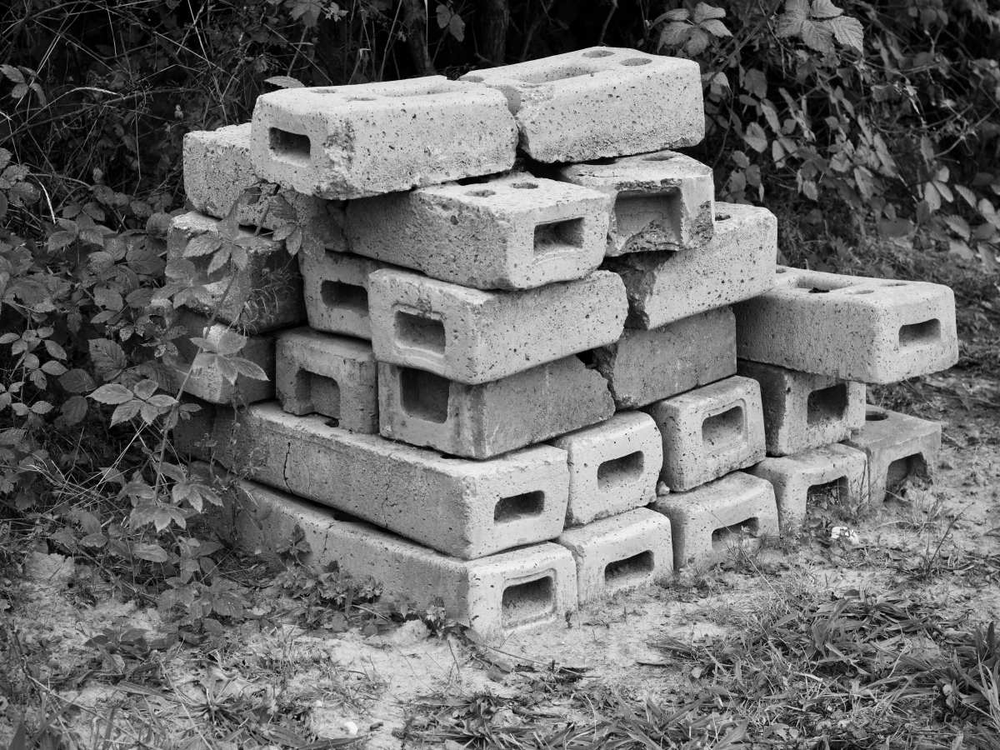
Obra gruesa
Materiales
Para construir.
-
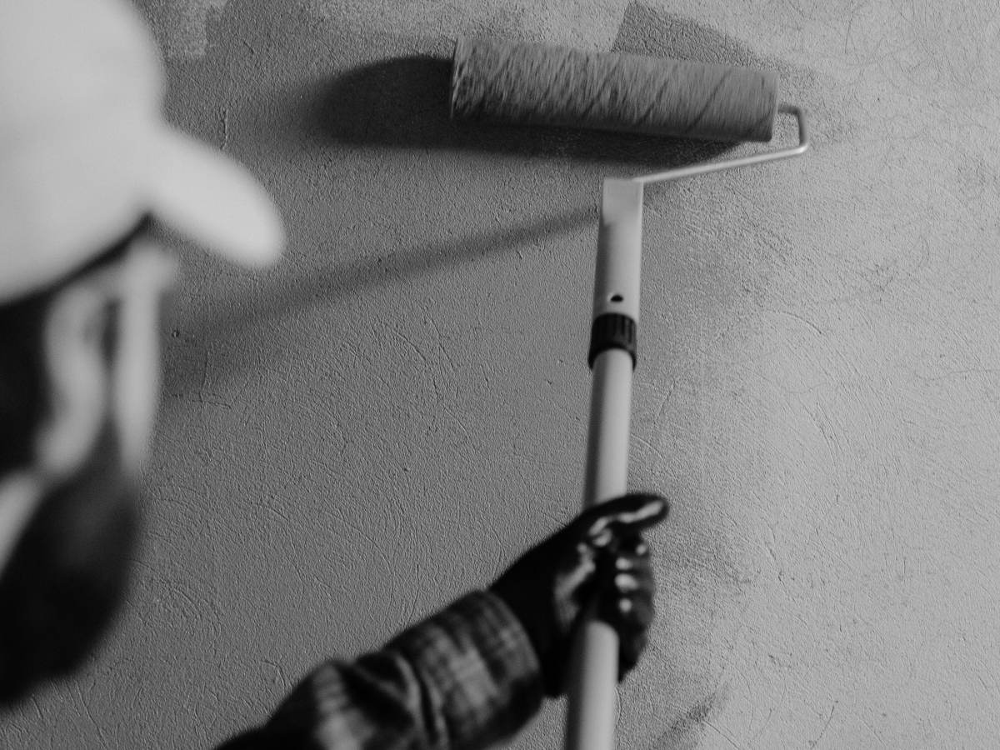
Color
Pinturas
Y terminaciones.
-
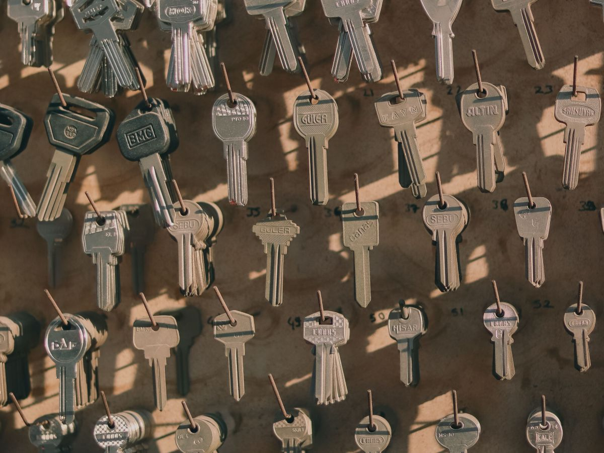
En el mesón
Copia de llaves
Mientras espera.
-
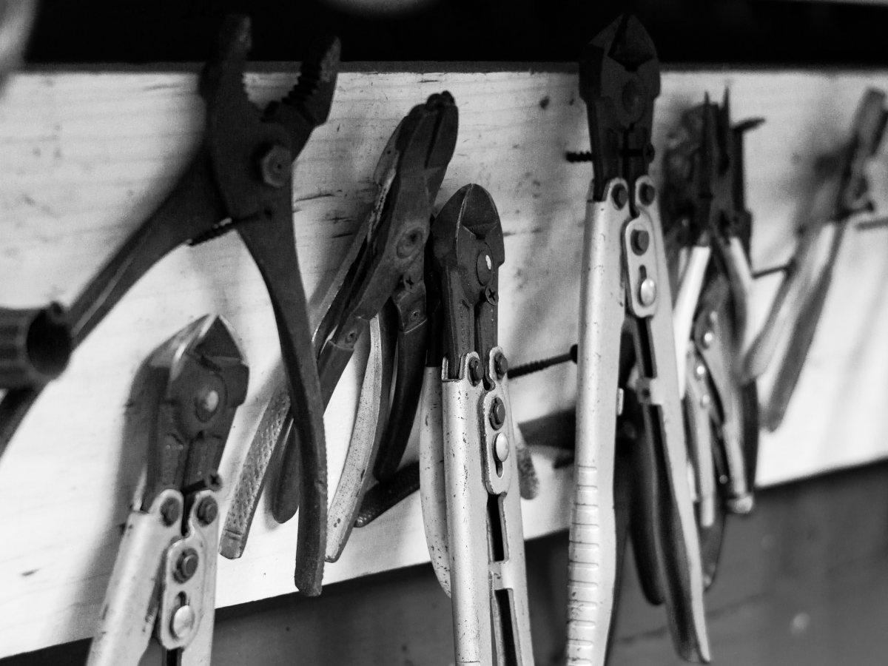
Ferretería
Herramientas
Lo de todos los días.
-
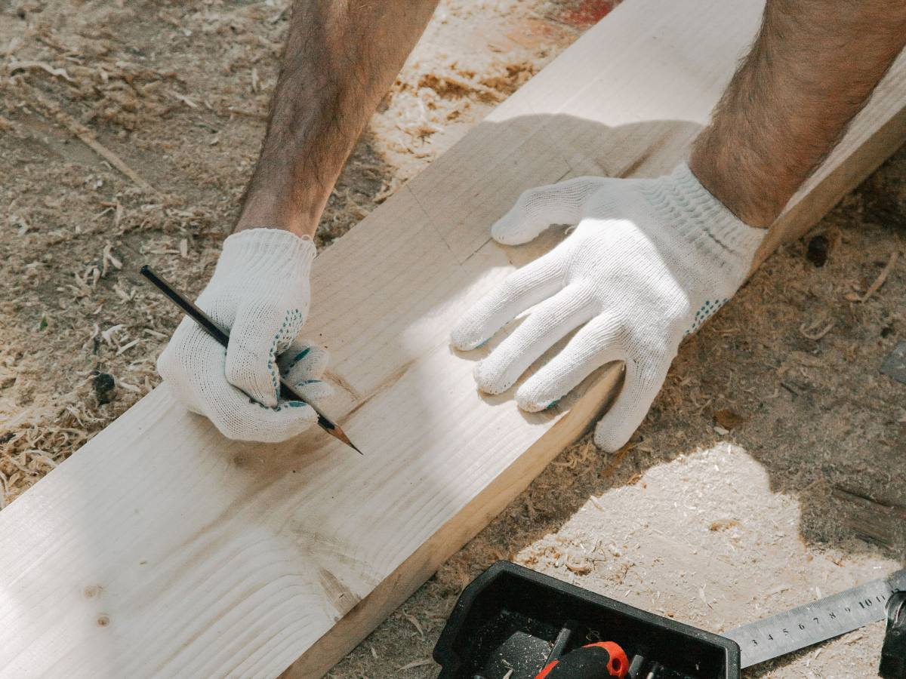
A su casa
Despacho
A domicilio.
Lo que la misma ferretería dice que ofrece.
390 reseñas en Puente Alto.
Av. Los Toros 1464
Fierro, ladrillo y pintura
El mesón de barrio
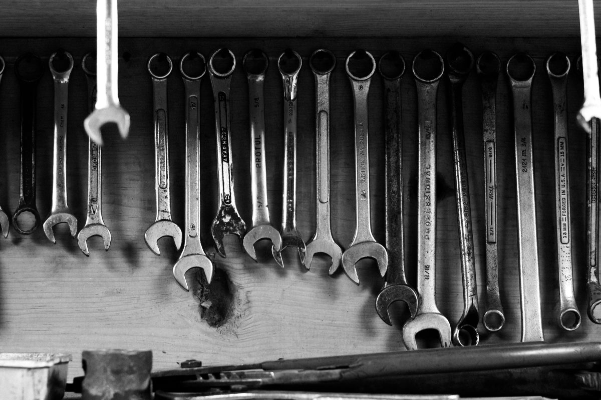
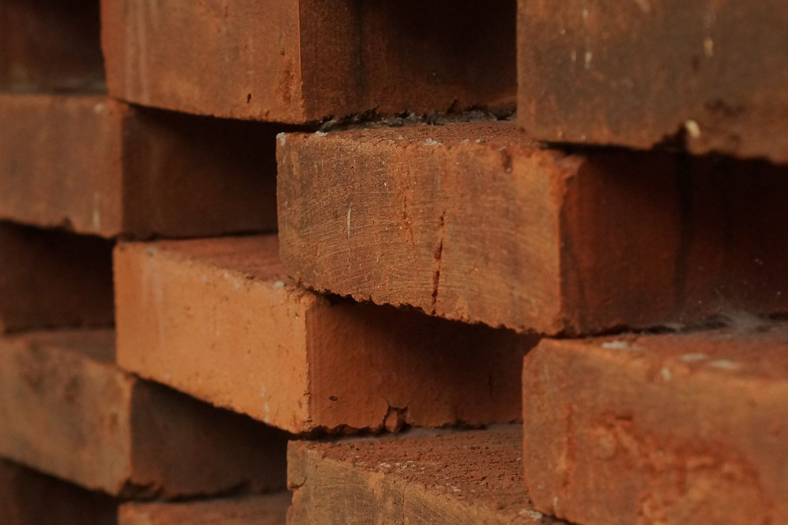
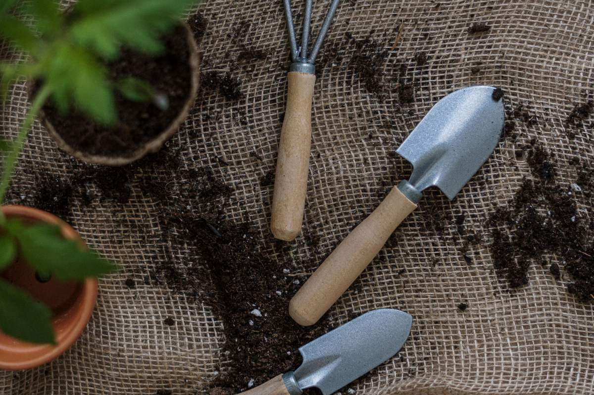
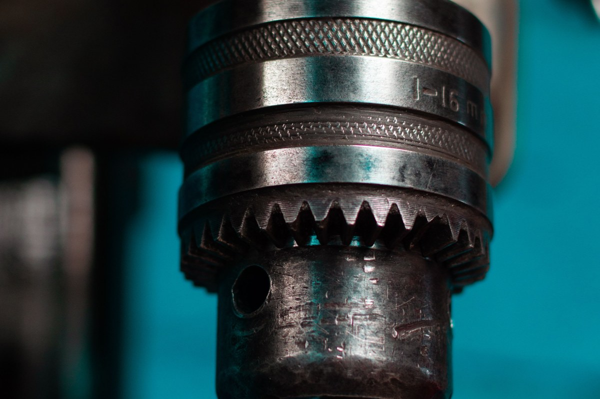
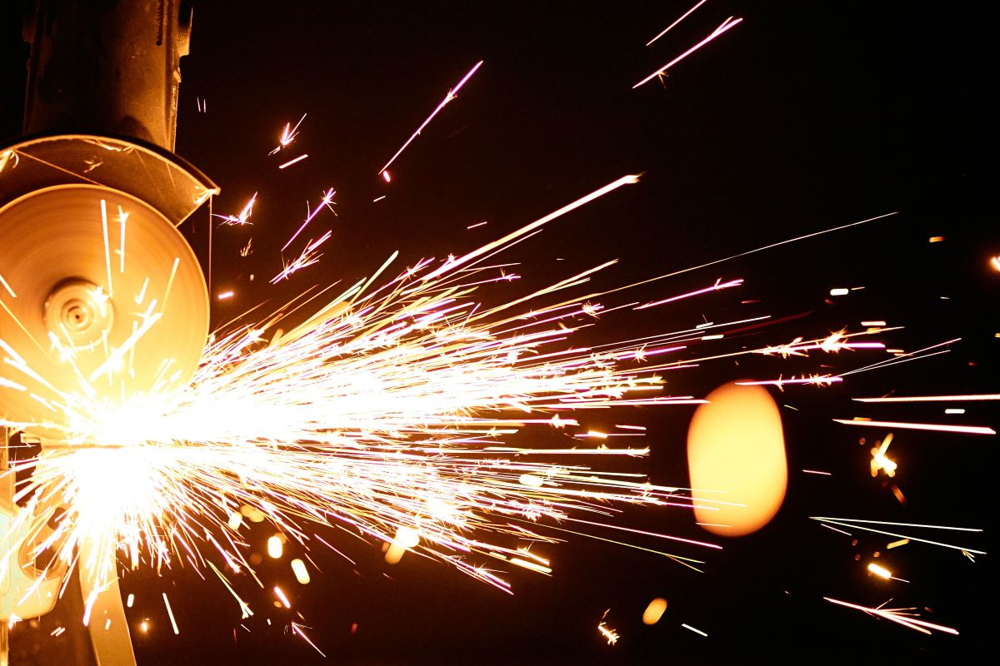
Fotos de referencia: ninguna es de la ferretería.
Dónde estamos
Av. Los Toros 1464, Puente Alto
- Dirección
- Av. Los Toros 1464
- Teléfono
- (2) 2288 3535
- Lun a vie
- 8:30–14:00 y 15:00–18:30
- Sáb y dom
- 9:00–14:00
El jueves abre sólo en la tarde, de 15:00 a 18:30.
Av. Los Toros 1464, Puente Alto Abrir en Google Maps
Para el dueño
Qué es real y qué falta
Lo verificado
Dirección, teléfono, horario, lo que ofrecen y el despacho, y las reseñas.
Lo de ejemplo
La lista de oficios y las fotos.
Lo que falta
A quién recomiendan, el equipo y fotos del local.